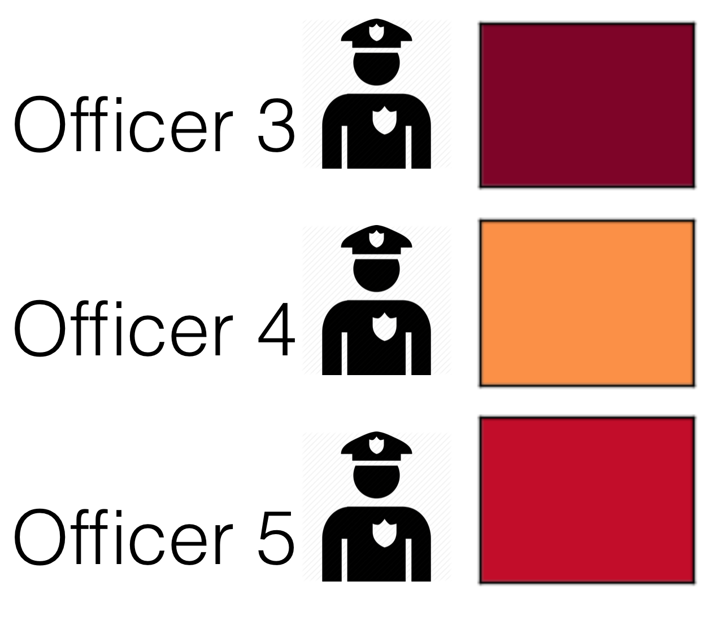
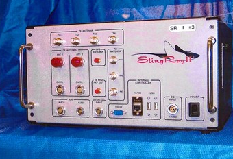

About
I'm currently a postdoctoral scholar at the Center for Data Science and Public Policy at the Computation Institute and the Harris School for Public Policy at the University of Chicago. My interests are data analysis methods, machine learning, privacy and security. Previously I was a 2015 Data Science for Social Good Fellow and an astrophysicist at the Kavli Institute for Cosmological Physics.Teaching
Winter 2016- University of Chicago - Computation for Public Policy (PPHA 30530)
Contact
Drop me a line at jen@redshiftzero.com or on Twitter @redshiftzero.My PGP fingerprint is 1308 98DB C324 62D4 1C7D 298E BCDF 35DB 90CC 0310.
Projects




CTO of Lucy Parsons Labs: An Illinois non-profit working on police accountability, transparency, and digital security
Predicting adverse interactions between police and members of the public
Primer on police surveillance technologies deployed in Chicago
Building tools for fairness in algorithms
Organizing digital security trainings for activists, journalists, and the public in Chicago
Preventing neighborhood blight in Cincinnati with predictive modeling
Academic publications in astrophysics
Blog posts
- {% for post in paginator.posts %}